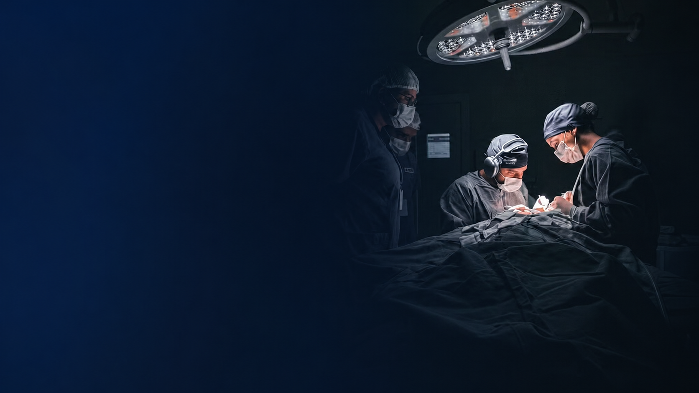
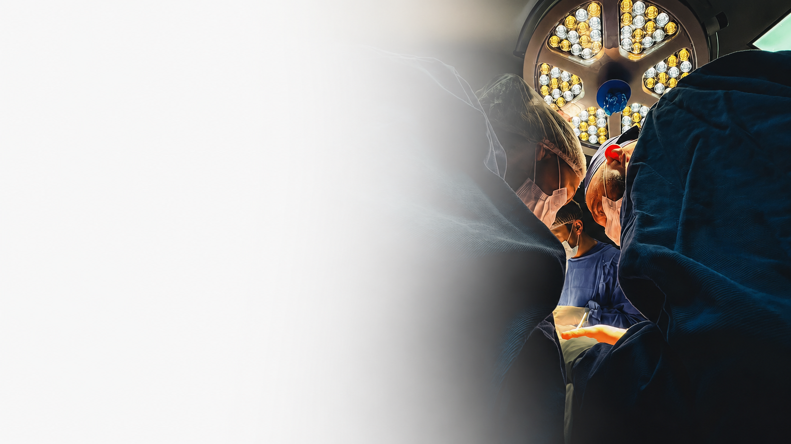

Dr. Raulino Brasil
Referência mundial em cirurgias de Deep Plane
Clínica especializada em cirurgia e traumatologia bucomaxilofacial, com atuação em Araranguá e Palhoça, Santa Catarina, e avaliação individual de cada caso.
↓ Rolar para baixoQuem é
Raulino Brasil
Guilherme Henrique Raulino Brasil é cirurgião bucomaxilofacial, natural de Palhoça (SC), especializado em procedimentos faciais de alta complexidade, como Deep Plane, Deep Neck, blefaroplastia, lip lifting, entre outras cirurgias faciais.
Atua profissionalmente em Palhoça e Araranguá, contando com uma equipe multidisciplinar dedicada ao cuidado integral de seus pacientes. Em Araranguá, possui seu próprio hospital, onde realiza procedimentos cirúrgicos de diferentes níveis de complexidade. Também é fundador do Projeto Leozinho, iniciativa que traduz parte de sua trajetória profissional e de seu propósito de cuidar e transformar vidas.

Procedimentos
Procedimentos e especialidades
Deep Plane Facelift
Reposiciona o conjunto músculo-cutâneo em bloco, sem tracionar a pele.
Blefaroplastia
Cirurgia das pálpebras com preservação da abertura natural do olhar.
Lip Lift
Encurta a distância entre a base do nariz e o lábio superior.
Cirurgia reconstrutiva
Reconstrução facial em casos de deformidade, paralisia facial e sequelas de acidentes.
Resultados reais
Antes e Depois
Registros cedidos com autorização dos pacientes. Resultados variam conforme anatomia, indicação e resposta individual, as imagens não representam garantia de resultado.

Projeto Leozinho
Reconstruir uma face também pode significar reconstruir uma vida.
O Projeto Leozinho nasceu para ampliar o acesso à reconstrução facial de pessoas que enfrentam condições complexas e não possuem recursos para acessar determinados tratamentos.

Raulino Brasil Academy
Raulino Brasil Academy
Fellow presencial
Acompanhamento cirúrgico dentro da rotina do hospital, do planejamento ao pós-operatório. Vagas limitadas.
Imersões práticas
Imersões presenciais curtas em anatomia e técnica facial, com datas divulgadas a cada turma.
Cursos on-line
Conteúdo gravado e encontros ao vivo para quem quer estudar a técnica à distância.
Grupo de pesquisa UNESC
Participação no grupo de pesquisa em odontologia, ligando prática cirúrgica e produção acadêmica.